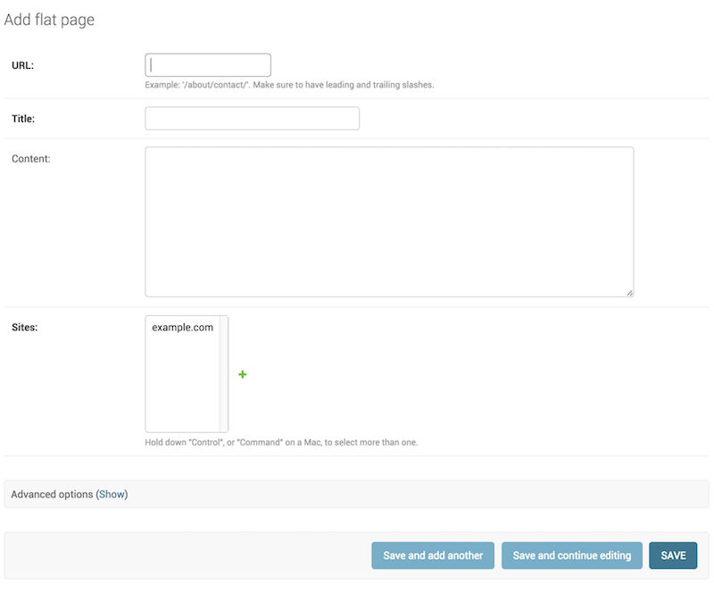

The Django admin site¶
One of the most powerful parts of Django is the automatic admin interface. It reads metadata from your models to provide a quick, model-centric interface where trusted users can manage content on your site. The admin's recommended use is limited to an organization's internal management tool. It's not intended for building your entire front end around.
The admin has many hooks for customization, but beware of trying to use those hooks exclusively. If you need to provide a more process-centric interface that abstracts away the implementation details of database tables and fields, then it's probably time to write your own views.
In this document we discuss how to activate, use, and customize Django's admin interface.
Overview¶
The admin is enabled in the default project template used by
startproject.
If you're not using the default project template, here are the requirements:
- Add
'django.contrib.admin'and its dependencies -django.contrib.auth,django.contrib.contenttypes,django.contrib.messages, anddjango.contrib.sessions- to yourINSTALLED_APPSsetting. - Configure a
DjangoTemplatesbackend in yourTEMPLATESsetting withdjango.contrib.auth.context_processors.authanddjango.contrib.messages.context_processors.messagesin the'context_processors'option ofOPTIONS. - If you've customized the
MIDDLEWAREsetting,django.contrib.auth.middleware.AuthenticationMiddlewareanddjango.contrib.messages.middleware.MessageMiddlewaremust be included.
After you've taken these steps, you'll be able to use the admin site by
visiting the URL you hooked it into (/admin/, by default).
If you need to create a user to login with, use the createsuperuser
command. By default, logging in to the admin requires that the user has the
is_superuser or is_staff attribute set to
True.
Finally, determine which of your application's models should be editable in the
admin interface. For each of those models, register them with the admin as
described in ModelAdmin.
Other topics¶
参见
For information about serving the static files (images, JavaScript, and CSS) associated with the admin in production, see Serving files.
Having problems? Try FAQ: 管理.
ModelAdmin objects¶
-
class
ModelAdmin[源代码]¶ The
ModelAdminclass is the representation of a model in the admin interface. Usually, these are stored in a file namedadmin.pyin your application. Let's take a look at a very simple example of theModelAdmin:from django.contrib import admin from myproject.myapp.models import Author class AuthorAdmin(admin.ModelAdmin): pass admin.site.register(Author, AuthorAdmin)
Do you need a
ModelAdminobject at all?In the preceding example, the
ModelAdminclass doesn't define any custom values (yet). As a result, the default admin interface will be provided. If you are happy with the default admin interface, you don't need to define aModelAdminobject at all -- you can register the model class without providing aModelAdmindescription. The preceding example could be simplified to:from django.contrib import admin from myproject.myapp.models import Author admin.site.register(Author)
The register decorator¶
-
register(*models, site=django.admin.sites.site)[源代码]¶ There is also a decorator for registering your
ModelAdminclasses:from django.contrib import admin from .models import Author @admin.register(Author) class AuthorAdmin(admin.ModelAdmin): pass
It's given one or more model classes to register with the
ModelAdmin. If you're using a customAdminSite, pass it using thesitekeyword argument:from django.contrib import admin from .models import Author, Editor, Reader from myproject.admin_site import custom_admin_site @admin.register(Author, Reader, Editor, site=custom_admin_site) class PersonAdmin(admin.ModelAdmin): pass
You can't use this decorator if you have to reference your model admin class in its
__init__()method, e.g.super(PersonAdmin, self).__init__(*args, **kwargs). You can usesuper().__init__(*args, **kwargs).
Discovery of admin files¶
When you put 'django.contrib.admin' in your INSTALLED_APPS
setting, Django automatically looks for an admin module in each
application and imports it.
-
class
apps.AdminConfig¶ This is the default
AppConfigclass for the admin. It callsautodiscover()when Django starts.
-
class
apps.SimpleAdminConfig¶ This class works like
AdminConfig, except it doesn't callautodiscover().-
default_site¶ - New in Django 2.1:
A dotted import path to the default admin site's class or to a callable that returns a site instance. Defaults to
'django.contrib.admin.sites.AdminSite'. See Overriding the default admin site for usage.
-
-
autodiscover()[源代码]¶ This function attempts to import an
adminmodule in each installed application. Such modules are expected to register models with the admin.Typically you won't need to call this function directly as
AdminConfigcalls it when Django starts.
If you are using a custom AdminSite, it is common to import all of the
ModelAdmin subclasses into your code and register them to the custom
AdminSite. In that case, in order to disable auto-discovery, you should
put 'django.contrib.admin.apps.SimpleAdminConfig' instead of
'django.contrib.admin' in your INSTALLED_APPS setting.
ModelAdmin options¶
The ModelAdmin is very flexible. It has several options for dealing with
customizing the interface. All options are defined on the ModelAdmin
subclass:
from django.contrib import admin
class AuthorAdmin(admin.ModelAdmin):
date_hierarchy = 'pub_date'
-
ModelAdmin.actions¶ A list of actions to make available on the change list page. See Admin actions for details.
-
ModelAdmin.actions_on_top¶
-
ModelAdmin.actions_on_bottom¶ Controls where on the page the actions bar appears. By default, the admin changelist displays actions at the top of the page (
actions_on_top = True; actions_on_bottom = False).
-
ModelAdmin.actions_selection_counter¶ Controls whether a selection counter is displayed next to the action dropdown. By default, the admin changelist will display it (
actions_selection_counter = True).
-
ModelAdmin.date_hierarchy¶ Set
date_hierarchyto the name of aDateFieldorDateTimeFieldin your model, and the change list page will include a date-based drilldown navigation by that field.Example:
date_hierarchy = 'pub_date'
You can also specify a field on a related model using the
__lookup, for example:date_hierarchy = 'author__pub_date'
This will intelligently populate itself based on available data, e.g. if all the dates are in one month, it'll show the day-level drill-down only.
注解
date_hierarchyusesQuerySet.datetimes()internally. Please refer to its documentation for some caveats when time zone support is enabled (USE_TZ = True).
-
ModelAdmin.empty_value_display¶ This attribute overrides the default display value for record's fields that are empty (
None, empty string, etc.). The default value is-(a dash). For example:from django.contrib import admin class AuthorAdmin(admin.ModelAdmin): empty_value_display = '-empty-'
You can also override
empty_value_displayfor all admin pages withAdminSite.empty_value_display, or for specific fields like this:from django.contrib import admin class AuthorAdmin(admin.ModelAdmin): fields = ('name', 'title', 'view_birth_date') def view_birth_date(self, obj): return obj.birth_date view_birth_date.empty_value_display = '???'
-
ModelAdmin.exclude¶ This attribute, if given, should be a list of field names to exclude from the form.
For example, let's consider the following model:
from django.db import models class Author(models.Model): name = models.CharField(max_length=100) title = models.CharField(max_length=3) birth_date = models.DateField(blank=True, null=True)
If you want a form for the
Authormodel that includes only thenameandtitlefields, you would specifyfieldsorexcludelike this:from django.contrib import admin class AuthorAdmin(admin.ModelAdmin): fields = ('name', 'title') class AuthorAdmin(admin.ModelAdmin): exclude = ('birth_date',)
Since the Author model only has three fields,
name,title, andbirth_date, the forms resulting from the above declarations will contain exactly the same fields.
-
ModelAdmin.fields¶ Use the
fieldsoption to make simple layout changes in the forms on the "add" and "change" pages such as showing only a subset of available fields, modifying their order, or grouping them into rows. For example, you could define a simpler version of the admin form for thedjango.contrib.flatpages.models.FlatPagemodel as follows:class FlatPageAdmin(admin.ModelAdmin): fields = ('url', 'title', 'content')
In the above example, only the fields
url,titleandcontentwill be displayed, sequentially, in the form.fieldscan contain values defined inModelAdmin.readonly_fieldsto be displayed as read-only.For more complex layout needs, see the
fieldsetsoption.The
fieldsoption accepts the same types of values aslist_display, except that callables aren't accepted. Names of model and model admin methods will only be used if they're listed inreadonly_fields.To display multiple fields on the same line, wrap those fields in their own tuple. In this example, the
urlandtitlefields will display on the same line and thecontentfield will be displayed below them on its own line:class FlatPageAdmin(admin.ModelAdmin): fields = (('url', 'title'), 'content')
Note
This
fieldsoption should not be confused with thefieldsdictionary key that is within thefieldsetsoption, as described in the next section.If neither
fieldsnorfieldsetsoptions are present, Django will default to displaying each field that isn't anAutoFieldand haseditable=True, in a single fieldset, in the same order as the fields are defined in the model.
-
ModelAdmin.fieldsets¶ Set
fieldsetsto control the layout of admin "add" and "change" pages.fieldsetsis a list of two-tuples, in which each two-tuple represents a<fieldset>on the admin form page. (A<fieldset>is a "section" of the form.)The two-tuples are in the format
(name, field_options), wherenameis a string representing the title of the fieldset andfield_optionsis a dictionary of information about the fieldset, including a list of fields to be displayed in it.A full example, taken from the
django.contrib.flatpages.models.FlatPagemodel:from django.contrib import admin class FlatPageAdmin(admin.ModelAdmin): fieldsets = ( (None, { 'fields': ('url', 'title', 'content', 'sites') }), ('Advanced options', { 'classes': ('collapse',), 'fields': ('registration_required', 'template_name'), }), )
This results in an admin page that looks like:
If neither
fieldsetsnorfieldsoptions are present, Django will default to displaying each field that isn't anAutoFieldand haseditable=True, in a single fieldset, in the same order as the fields are defined in the model.The
field_optionsdictionary can have the following keys:fieldsA tuple of field names to display in this fieldset. This key is required.
Example:
{ 'fields': ('first_name', 'last_name', 'address', 'city', 'state'), }
As with the
fieldsoption, to display multiple fields on the same line, wrap those fields in their own tuple. In this example, thefirst_nameandlast_namefields will display on the same line:{ 'fields': (('first_name', 'last_name'), 'address', 'city', 'state'), }
fieldscan contain values defined inreadonly_fieldsto be displayed as read-only.If you add the name of a callable to
fields, the same rule applies as with thefieldsoption: the callable must be listed inreadonly_fields.
classesA list or tuple containing extra CSS classes to apply to the fieldset.
Example:
{ 'classes': ('wide', 'extrapretty'), }
Two useful classes defined by the default admin site stylesheet are
collapseandwide. Fieldsets with thecollapsestyle will be initially collapsed in the admin and replaced with a small "click to expand" link. Fieldsets with thewidestyle will be given extra horizontal space.
descriptionA string of optional extra text to be displayed at the top of each fieldset, under the heading of the fieldset. This string is not rendered for
TabularInlinedue to its layout.Note that this value is not HTML-escaped when it's displayed in the admin interface. This lets you include HTML if you so desire. Alternatively you can use plain text and
django.utils.html.escape()to escape any HTML special characters.
-
ModelAdmin.filter_horizontal¶ By default, a
ManyToManyFieldis displayed in the admin site with a<select multiple>. However, multiple-select boxes can be difficult to use when selecting many items. Adding aManyToManyFieldto this list will instead use a nifty unobtrusive JavaScript "filter" interface that allows searching within the options. The unselected and selected options appear in two boxes side by side. Seefilter_verticalto use a vertical interface.
-
ModelAdmin.filter_vertical¶ Same as
filter_horizontal, but uses a vertical display of the filter interface with the box of unselected options appearing above the box of selected options.
-
ModelAdmin.form¶ By default a
ModelFormis dynamically created for your model. It is used to create the form presented on both the add/change pages. You can easily provide your ownModelFormto override any default form behavior on the add/change pages. Alternatively, you can customize the default form rather than specifying an entirely new one by using theModelAdmin.get_form()method.For an example see the section Adding custom validation to the admin.
Note
If you define the
Meta.modelattribute on aModelForm, you must also define theMeta.fieldsattribute (or theMeta.excludeattribute). However, since the admin has its own way of defining fields, theMeta.fieldsattribute will be ignored.If the
ModelFormis only going to be used for the admin, the easiest solution is to omit theMeta.modelattribute, sinceModelAdminwill provide the correct model to use. Alternatively, you can setfields = []in theMetaclass to satisfy the validation on theModelForm.Note
If your
ModelFormandModelAdminboth define anexcludeoption thenModelAdmintakes precedence:from django import forms from django.contrib import admin from myapp.models import Person class PersonForm(forms.ModelForm): class Meta: model = Person exclude = ['name'] class PersonAdmin(admin.ModelAdmin): exclude = ['age'] form = PersonForm
In the above example, the "age" field will be excluded but the "name" field will be included in the generated form.
-
ModelAdmin.formfield_overrides¶ This provides a quick-and-dirty way to override some of the
Fieldoptions for use in the admin.formfield_overridesis a dictionary mapping a field class to a dict of arguments to pass to the field at construction time.Since that's a bit abstract, let's look at a concrete example. The most common use of
formfield_overridesis to add a custom widget for a certain type of field. So, imagine we've written aRichTextEditorWidgetthat we'd like to use for large text fields instead of the default<textarea>. Here's how we'd do that:from django.contrib import admin from django.db import models # Import our custom widget and our model from where they're defined from myapp.models import MyModel from myapp.widgets import RichTextEditorWidget class MyModelAdmin(admin.ModelAdmin): formfield_overrides = { models.TextField: {'widget': RichTextEditorWidget}, }
Note that the key in the dictionary is the actual field class, not a string. The value is another dictionary; these arguments will be passed to the form field's
__init__()method. See The Forms API for details.警告
If you want to use a custom widget with a relation field (i.e.
ForeignKeyorManyToManyField), make sure you haven't included that field's name inraw_id_fields,radio_fields, orautocomplete_fields.formfield_overrideswon't let you change the widget on relation fields that haveraw_id_fields,radio_fields, orautocomplete_fieldsset. That's becauseraw_id_fields,radio_fields, andautocomplete_fieldsimply custom widgets of their own.
-
ModelAdmin.inlines¶ See
InlineModelAdminobjects below as well asModelAdmin.get_formsets_with_inlines().
-
ModelAdmin.list_display¶ Set
list_displayto control which fields are displayed on the change list page of the admin.Example:
list_display = ('first_name', 'last_name')
If you don't set
list_display, the admin site will display a single column that displays the__str__()representation of each object.There are four types of values that can be used in
list_display:The name of a model field. For example:
class PersonAdmin(admin.ModelAdmin): list_display = ('first_name', 'last_name')
A callable that accepts one argument, the model instance. For example:
def upper_case_name(obj): return ("%s %s" % (obj.first_name, obj.last_name)).upper() upper_case_name.short_description = 'Name' class PersonAdmin(admin.ModelAdmin): list_display = (upper_case_name,)
A string representing a
ModelAdminmethod that accepts one argument, the model instance. For example:class PersonAdmin(admin.ModelAdmin): list_display = ('upper_case_name',) def upper_case_name(self, obj): return ("%s %s" % (obj.first_name, obj.last_name)).upper() upper_case_name.short_description = 'Name'
A string representing a model attribute or method (without any required arguments). For example:
from django.contrib import admin from django.db import models class Person(models.Model): name = models.CharField(max_length=50) birthday = models.DateField() def decade_born_in(self): return self.birthday.strftime('%Y')[:3] + "0's" decade_born_in.short_description = 'Birth decade' class PersonAdmin(admin.ModelAdmin): list_display = ('name', 'decade_born_in')
A few special cases to note about
list_display:If the field is a
ForeignKey, Django will display the__str__()of the related object.ManyToManyFieldfields aren't supported, because that would entail executing a separate SQL statement for each row in the table. If you want to do this nonetheless, give your model a custom method, and add that method's name tolist_display. (See below for more on custom methods inlist_display.)If the field is a
BooleanField, Django will display a pretty "on" or "off" icon instead ofTrueorFalse.If the string given is a method of the model,
ModelAdminor a callable, Django will HTML-escape the output by default. To escape user input and allow your own unescaped tags, useformat_html().Here's a full example model:
from django.contrib import admin from django.db import models from django.utils.html import format_html class Person(models.Model): first_name = models.CharField(max_length=50) last_name = models.CharField(max_length=50) color_code = models.CharField(max_length=6) def colored_name(self): return format_html( '<span style="color: #{};">{} {}</span>', self.color_code, self.first_name, self.last_name, ) class PersonAdmin(admin.ModelAdmin): list_display = ('first_name', 'last_name', 'colored_name')
As some examples have already demonstrated, when using a callable, a model method, or a
ModelAdminmethod, you can customize the column's title by adding ashort_descriptionattribute to the callable.If the value of a field is
None, an empty string, or an iterable without elements, Django will display-(a dash). You can override this withAdminSite.empty_value_display:from django.contrib import admin admin.site.empty_value_display = '(None)'
You can also use
ModelAdmin.empty_value_display:class PersonAdmin(admin.ModelAdmin): empty_value_display = 'unknown'
Or on a field level:
class PersonAdmin(admin.ModelAdmin): list_display = ('name', 'birth_date_view') def birth_date_view(self, obj): return obj.birth_date birth_date_view.empty_value_display = 'unknown'
If the string given is a method of the model,
ModelAdminor a callable that returns True or False Django will display a pretty "on" or "off" icon if you give the method abooleanattribute whose value isTrue.Here's a full example model:
from django.contrib import admin from django.db import models class Person(models.Model): first_name = models.CharField(max_length=50) birthday = models.DateField() def born_in_fifties(self): return self.birthday.strftime('%Y')[:3] == '195' born_in_fifties.boolean = True class PersonAdmin(admin.ModelAdmin): list_display = ('name', 'born_in_fifties')
The
__str__()method is just as valid inlist_displayas any other model method, so it's perfectly OK to do this:list_display = ('__str__', 'some_other_field')
Usually, elements of
list_displaythat aren't actual database fields can't be used in sorting (because Django does all the sorting at the database level).However, if an element of
list_displayrepresents a certain database field, you can indicate this fact by setting theadmin_order_fieldattribute of the item.For example:
from django.contrib import admin from django.db import models from django.utils.html import format_html class Person(models.Model): first_name = models.CharField(max_length=50) color_code = models.CharField(max_length=6) def colored_first_name(self): return format_html( '<span style="color: #{};">{}</span>', self.color_code, self.first_name, ) colored_first_name.admin_order_field = 'first_name' class PersonAdmin(admin.ModelAdmin): list_display = ('first_name', 'colored_first_name')
The above will tell Django to order by the
first_namefield when trying to sort bycolored_first_namein the admin.To indicate descending order with
admin_order_fieldyou can use a hyphen prefix on the field name. Using the above example, this would look like:colored_first_name.admin_order_field = '-first_name'
admin_order_fieldsupports query lookups to sort by values on related models. This example includes an "author first name" column in the list display and allows sorting it by first name:class Blog(models.Model): title = models.CharField(max_length=255) author = models.ForeignKey(Person, on_delete=models.CASCADE) class BlogAdmin(admin.ModelAdmin): list_display = ('title', 'author', 'author_first_name') def author_first_name(self, obj): return obj.author.first_name author_first_name.admin_order_field = 'author__first_name'
Query expressions may be used in
admin_order_field. For example:from django.db.models import Value from django.db.models.functions import Concat class Person(models.Model): first_name = models.CharField(max_length=50) last_name = models.CharField(max_length=50) def full_name(self): return self.first_name + ' ' + self.last_name full_name.admin_order_field = Concat('first_name', Value(' '), 'last_name')
New in Django 2.1:Support for expressions in
admin_order_fieldwas added.Elements of
list_displaycan also be properties. Please note however, that due to the way properties work in Python, settingshort_descriptionon a property is only possible when using theproperty()function and not with the@propertydecorator.For example:
class Person(models.Model): first_name = models.CharField(max_length=50) last_name = models.CharField(max_length=50) def my_property(self): return self.first_name + ' ' + self.last_name my_property.short_description = "Full name of the person" full_name = property(my_property) class PersonAdmin(admin.ModelAdmin): list_display = ('full_name',)
The field names in
list_displaywill also appear as CSS classes in the HTML output, in the form ofcolumn-<field_name>on each<th>element. This can be used to set column widths in a CSS file for example.Django will try to interpret every element of
list_displayin this order:- A field of the model.
- A callable.
- A string representing a
ModelAdminattribute. - A string representing a model attribute.
For example if you have
first_nameas a model field and as aModelAdminattribute, the model field will be used.
-
ModelAdmin.list_display_links¶ Use
list_display_linksto control if and which fields inlist_displayshould be linked to the "change" page for an object.By default, the change list page will link the first column -- the first field specified in
list_display-- to the change page for each item. Butlist_display_linkslets you change this:Set it to
Noneto get no links at all.Set it to a list or tuple of fields (in the same format as
list_display) whose columns you want converted to links.You can specify one or many fields. As long as the fields appear in
list_display, Django doesn't care how many (or how few) fields are linked. The only requirement is that if you want to uselist_display_linksin this fashion, you must definelist_display.
In this example, the
first_nameandlast_namefields will be linked on the change list page:class PersonAdmin(admin.ModelAdmin): list_display = ('first_name', 'last_name', 'birthday') list_display_links = ('first_name', 'last_name')
In this example, the change list page grid will have no links:
class AuditEntryAdmin(admin.ModelAdmin): list_display = ('timestamp', 'message') list_display_links = None
-
ModelAdmin.list_editable¶ Set
list_editableto a list of field names on the model which will allow editing on the change list page. That is, fields listed inlist_editablewill be displayed as form widgets on the change list page, allowing users to edit and save multiple rows at once.注解
list_editableinteracts with a couple of other options in particular ways; you should note the following rules:- Any field in
list_editablemust also be inlist_display. You can't edit a field that's not displayed! - The same field can't be listed in both
list_editableandlist_display_links-- a field can't be both a form and a link.
You'll get a validation error if either of these rules are broken.
- Any field in
-
ModelAdmin.list_filter¶ Set
list_filterto activate filters in the right sidebar of the change list page of the admin, as illustrated in the following screenshot:
list_filtershould be a list or tuple of elements, where each element should be of one of the following types:a field name, where the specified field should be either a
BooleanField,CharField,DateField,DateTimeField,IntegerField,ForeignKeyorManyToManyField, for example:class PersonAdmin(admin.ModelAdmin): list_filter = ('is_staff', 'company')
Field names in
list_filtercan also span relations using the__lookup, for example:class PersonAdmin(admin.UserAdmin): list_filter = ('company__name',)
a class inheriting from
django.contrib.admin.SimpleListFilter, which you need to provide thetitleandparameter_nameattributes to and override thelookupsandquerysetmethods, e.g.:from datetime import date from django.contrib import admin from django.utils.translation import gettext_lazy as _ class DecadeBornListFilter(admin.SimpleListFilter): # Human-readable title which will be displayed in the # right admin sidebar just above the filter options. title = _('decade born') # Parameter for the filter that will be used in the URL query. parameter_name = 'decade' def lookups(self, request, model_admin): """ Returns a list of tuples. The first element in each tuple is the coded value for the option that will appear in the URL query. The second element is the human-readable name for the option that will appear in the right sidebar. """ return ( ('80s', _('in the eighties')), ('90s', _('in the nineties')), ) def queryset(self, request, queryset): """ Returns the filtered queryset based on the value provided in the query string and retrievable via `self.value()`. """ # Compare the requested value (either '80s' or '90s') # to decide how to filter the queryset. if self.value() == '80s': return queryset.filter(birthday__gte=date(1980, 1, 1), birthday__lte=date(1989, 12, 31)) if self.value() == '90s': return queryset.filter(birthday__gte=date(1990, 1, 1), birthday__lte=date(1999, 12, 31)) class PersonAdmin(admin.ModelAdmin): list_filter = (DecadeBornListFilter,)
注解
As a convenience, the
HttpRequestobject is passed to thelookupsandquerysetmethods, for example:class AuthDecadeBornListFilter(DecadeBornListFilter): def lookups(self, request, model_admin): if request.user.is_superuser: return super().lookups(request, model_admin) def queryset(self, request, queryset): if request.user.is_superuser: return super().queryset(request, queryset)
Also as a convenience, the
ModelAdminobject is passed to thelookupsmethod, for example if you want to base the lookups on the available data:class AdvancedDecadeBornListFilter(DecadeBornListFilter): def lookups(self, request, model_admin): """ Only show the lookups if there actually is anyone born in the corresponding decades. """ qs = model_admin.get_queryset(request) if qs.filter(birthday__gte=date(1980, 1, 1), birthday__lte=date(1989, 12, 31)).exists(): yield ('80s', _('in the eighties')) if qs.filter(birthday__gte=date(1990, 1, 1), birthday__lte=date(1999, 12, 31)).exists(): yield ('90s', _('in the nineties'))
a tuple, where the first element is a field name and the second element is a class inheriting from
django.contrib.admin.FieldListFilter, for example:class PersonAdmin(admin.ModelAdmin): list_filter = ( ('is_staff', admin.BooleanFieldListFilter), )
You can limit the choices of a related model to the objects involved in that relation using
RelatedOnlyFieldListFilter:class BookAdmin(admin.ModelAdmin): list_filter = ( ('author', admin.RelatedOnlyFieldListFilter), )
Assuming
authoris aForeignKeyto aUsermodel, this will limit thelist_filterchoices to the users who have written a book instead of listing all users.注解
The
FieldListFilterAPI is considered internal and might be changed.
List filter's typically appear only if the filter has more than one choice. A filter's
has_output()method controls whether or not it appears.It is possible to specify a custom template for rendering a list filter:
class FilterWithCustomTemplate(admin.SimpleListFilter): template = "custom_template.html"
See the default template provided by Django (
admin/filter.html) for a concrete example.
-
ModelAdmin.list_max_show_all¶ Set
list_max_show_allto control how many items can appear on a "Show all" admin change list page. The admin will display a "Show all" link on the change list only if the total result count is less than or equal to this setting. By default, this is set to200.
-
ModelAdmin.list_per_page¶ Set
list_per_pageto control how many items appear on each paginated admin change list page. By default, this is set to100.
Set
list_select_relatedto tell Django to useselect_related()in retrieving the list of objects on the admin change list page. This can save you a bunch of database queries.The value should be either a boolean, a list or a tuple. Default is
False.When value is
True,select_related()will always be called. When value is set toFalse, Django will look atlist_displayand callselect_related()if anyForeignKeyis present.If you need more fine-grained control, use a tuple (or list) as value for
list_select_related. Empty tuple will prevent Django from callingselect_relatedat all. Any other tuple will be passed directly toselect_relatedas parameters. For example:class ArticleAdmin(admin.ModelAdmin): list_select_related = ('author', 'category')
will call
select_related('author', 'category').If you need to specify a dynamic value based on the request, you can implement a
get_list_select_related()method.
-
ModelAdmin.ordering¶ Set
orderingto specify how lists of objects should be ordered in the Django admin views. This should be a list or tuple in the same format as a model'sorderingparameter.If this isn't provided, the Django admin will use the model's default ordering.
If you need to specify a dynamic order (for example depending on user or language) you can implement a
get_ordering()method.
-
ModelAdmin.paginator¶ The paginator class to be used for pagination. By default,
django.core.paginator.Paginatoris used. If the custom paginator class doesn't have the same constructor interface asdjango.core.paginator.Paginator, you will also need to provide an implementation forModelAdmin.get_paginator().
-
ModelAdmin.prepopulated_fields¶ Set
prepopulated_fieldsto a dictionary mapping field names to the fields it should prepopulate from:class ArticleAdmin(admin.ModelAdmin): prepopulated_fields = {"slug": ("title",)}
When set, the given fields will use a bit of JavaScript to populate from the fields assigned. The main use for this functionality is to automatically generate the value for
SlugFieldfields from one or more other fields. The generated value is produced by concatenating the values of the source fields, and then by transforming that result into a valid slug (e.g. substituting dashes for spaces; lowercasing ASCII letters; and removing various English stop words such as 'a', 'an', 'as', and similar).Prepopulated fields aren't modified by JavaScript after a value has been saved. It's usually undesired that slugs change (which would cause an object's URL to change if the slug is used in it).
prepopulated_fieldsdoesn't acceptDateTimeField,ForeignKey,OneToOneField, andManyToManyFieldfields.
-
ModelAdmin.preserve_filters¶ The admin now preserves filters on the list view after creating, editing or deleting an object. You can restore the previous behavior of clearing filters by setting this attribute to
False.
-
ModelAdmin.radio_fields¶ By default, Django's admin uses a select-box interface (<select>) for fields that are
ForeignKeyor havechoicesset. If a field is present inradio_fields, Django will use a radio-button interface instead. Assuminggroupis aForeignKeyon thePersonmodel:class PersonAdmin(admin.ModelAdmin): radio_fields = {"group": admin.VERTICAL}
You have the choice of using
HORIZONTALorVERTICALfrom thedjango.contrib.adminmodule.Don't include a field in
radio_fieldsunless it's aForeignKeyor haschoicesset.
-
ModelAdmin.autocomplete_fields¶ - New in Django 2.0:
autocomplete_fieldsis a list ofForeignKeyand/orManyToManyFieldfields you would like to change to Select2 autocomplete inputs.By default, the admin uses a select-box interface (
<select>) for those fields. Sometimes you don't want to incur the overhead of selecting all the related instances to display in the dropdown.The Select2 input looks similar to the default input but comes with a search feature that loads the options asynchronously. This is faster and more user-friendly if the related model has many instances.
You must define
search_fieldson the related object'sModelAdminbecause the autocomplete search uses it.To avoid unauthorized data disclosure, users must have the
vieworchangepermission to the related object in order to use autocomplete.Ordering and pagination of the results are controlled by the related
ModelAdmin'sget_ordering()andget_paginator()methods.In the following example,
ChoiceAdminhas an autocomplete field for theForeignKeyto theQuestion. The results are filtered by thequestion_textfield and ordered by thedate_createdfield:class QuestionAdmin(admin.ModelAdmin): ordering = ['date_created'] search_fields = ['question_text'] class ChoiceAdmin(admin.ModelAdmin): autocomplete_fields = ['question']
Performance considerations for large datasets
Ordering using
ModelAdmin.orderingmay cause performance problems as sorting on a large queryset will be slow.Also, if your search fields include fields that aren't indexed by the database, you might encounter poor performance on extremely large tables.
For those cases, it's a good idea to write your own
ModelAdmin.get_search_results()implementation using a full-text indexed search.You may also want to change the
Paginatoron very large tables as the default paginator always performs acount()query. For example, you could override the default implementation of thePaginator.countproperty.
-
ModelAdmin.raw_id_fields¶ By default, Django's admin uses a select-box interface (<select>) for fields that are
ForeignKey. Sometimes you don't want to incur the overhead of having to select all the related instances to display in the drop-down.raw_id_fieldsis a list of fields you would like to change into anInputwidget for either aForeignKeyorManyToManyField:class ArticleAdmin(admin.ModelAdmin): raw_id_fields = ("newspaper",)
The
raw_id_fieldsInputwidget should contain a primary key if the field is aForeignKeyor a comma separated list of values if the field is aManyToManyField. Theraw_id_fieldswidget shows a magnifying glass button next to the field which allows users to search for and select a value:
-
ModelAdmin.readonly_fields¶ By default the admin shows all fields as editable. Any fields in this option (which should be a
listortuple) will display its data as-is and non-editable; they are also excluded from theModelFormused for creating and editing. Note that when specifyingModelAdmin.fieldsorModelAdmin.fieldsetsthe read-only fields must be present to be shown (they are ignored otherwise).If
readonly_fieldsis used without defining explicit ordering throughModelAdmin.fieldsorModelAdmin.fieldsetsthey will be added last after all editable fields.A read-only field can not only display data from a model's field, it can also display the output of a model's method or a method of the
ModelAdminclass itself. This is very similar to the wayModelAdmin.list_displaybehaves. This provides an easy way to use the admin interface to provide feedback on the status of the objects being edited, for example:from django.contrib import admin from django.utils.html import format_html_join from django.utils.safestring import mark_safe class PersonAdmin(admin.ModelAdmin): readonly_fields = ('address_report',) def address_report(self, instance): # assuming get_full_address() returns a list of strings # for each line of the address and you want to separate each # line by a linebreak return format_html_join( mark_safe('<br>'), '{}', ((line,) for line in instance.get_full_address()), ) or mark_safe("<span class='errors'>I can't determine this address.</span>") # short_description functions like a model field's verbose_name address_report.short_description = "Address"
-
ModelAdmin.save_as¶ Set
save_asto enable a "save as new" feature on admin change forms.Normally, objects have three save options: "Save", "Save and continue editing", and "Save and add another". If
save_asisTrue, "Save and add another" will be replaced by a "Save as new" button that creates a new object (with a new ID) rather than updating the existing object.By default,
save_asis set toFalse.
-
ModelAdmin.save_as_continue¶ When
save_as=True, the default redirect after saving the new object is to the change view for that object. If you setsave_as_continue=False, the redirect will be to the changelist view.By default,
save_as_continueis set toTrue.
-
ModelAdmin.save_on_top¶ Set
save_on_topto add save buttons across the top of your admin change forms.Normally, the save buttons appear only at the bottom of the forms. If you set
save_on_top, the buttons will appear both on the top and the bottom.By default,
save_on_topis set toFalse.
-
ModelAdmin.search_fields¶ Set
search_fieldsto enable a search box on the admin change list page. This should be set to a list of field names that will be searched whenever somebody submits a search query in that text box.These fields should be some kind of text field, such as
CharFieldorTextField. You can also perform a related lookup on aForeignKeyorManyToManyFieldwith the lookup API "follow" notation:search_fields = ['foreign_key__related_fieldname']
For example, if you have a blog entry with an author, the following definition would enable searching blog entries by the email address of the author:
search_fields = ['user__email']
When somebody does a search in the admin search box, Django splits the search query into words and returns all objects that contain each of the words, case-insensitive (using the
icontainslookup), where each word must be in at least one ofsearch_fields. For example, ifsearch_fieldsis set to['first_name', 'last_name']and a user searches forjohn lennon, Django will do the equivalent of this SQLWHEREclause:WHERE (first_name ILIKE '%john%' OR last_name ILIKE '%john%') AND (first_name ILIKE '%lennon%' OR last_name ILIKE '%lennon%')
If you don't want to use
icontainsas the lookup, you can use any lookup by appending it the field. For example, you could useexactby settingsearch_fieldsto['first_name__exact'].Beware that because query terms are split and ANDed as described earlier, searching with
exactonly works with a single search word since two or more words can't all be an exact match unless all words are the same.New in Django 2.1:The ability to specify a field lookup was added.
Some (older) shortcuts for specifying a field lookup are also available. You can prefix a field in
search_fieldswith the following characters and it's equivalent to adding__<lookup>to the field:Prefix Lookup ^ startswith= iexact@ searchNone icontainsIf you need to customize search you can use
ModelAdmin.get_search_results()to provide additional or alternate search behavior.
-
ModelAdmin.show_full_result_count¶ Set
show_full_result_countto control whether the full count of objects should be displayed on a filtered admin page (e.g.99 results (103 total)). If this option is set toFalse, a text like99 results (Show all)is displayed instead.The default of
show_full_result_count=Truegenerates a query to perform a full count on the table which can be expensive if the table contains a large number of rows.
-
ModelAdmin.sortable_by¶ - New in Django 2.1:
By default, the change list page allows sorting by all model fields (and callables that have the
admin_order_fieldproperty) specified inlist_display.If you want to disable sorting for some columns, set
sortable_byto a collection (e.g.list,tuple, orset) of the subset oflist_displaythat you want to be sortable. An empty collection disables sorting for all columns.If you need to specify this list dynamically, implement a
get_sortable_by()method instead.
-
ModelAdmin.view_on_site¶ Set
view_on_siteto control whether or not to display the "View on site" link. This link should bring you to a URL where you can display the saved object.This value can be either a boolean flag or a callable. If
True(the default), the object'sget_absolute_url()method will be used to generate the url.If your model has a
get_absolute_url()method but you don't want the "View on site" button to appear, you only need to setview_on_sitetoFalse:from django.contrib import admin class PersonAdmin(admin.ModelAdmin): view_on_site = False
In case it is a callable, it accepts the model instance as a parameter. For example:
from django.contrib import admin from django.urls import reverse class PersonAdmin(admin.ModelAdmin): def view_on_site(self, obj): url = reverse('person-detail', kwargs={'slug': obj.slug}) return 'https://example.com' + url
Custom template options¶
The Overriding admin templates section describes how to override or extend
the default admin templates. Use the following options to override the default
templates used by the ModelAdmin views:
-
ModelAdmin.add_form_template¶ Path to a custom template, used by
add_view().
-
ModelAdmin.change_form_template¶ Path to a custom template, used by
change_view().
-
ModelAdmin.change_list_template¶ Path to a custom template, used by
changelist_view().
-
ModelAdmin.delete_confirmation_template¶ Path to a custom template, used by
delete_view()for displaying a confirmation page when deleting one or more objects.
-
ModelAdmin.delete_selected_confirmation_template¶ Path to a custom template, used by the
delete_selectedaction method for displaying a confirmation page when deleting one or more objects. See the actions documentation.
-
ModelAdmin.object_history_template¶ Path to a custom template, used by
history_view().
-
ModelAdmin.popup_response_template¶ Path to a custom template, used by
response_add(),response_change(), andresponse_delete().
ModelAdmin methods¶
警告
When overriding ModelAdmin.save_model() and
ModelAdmin.delete_model(), your code must save/delete the
object. They aren't meant for veto purposes, rather they allow you to
perform extra operations.
-
ModelAdmin.save_model(request, obj, form, change)[源代码]¶ The
save_modelmethod is given theHttpRequest, a model instance, aModelForminstance, and a boolean value based on whether it is adding or changing the object. Overriding this method allows doing pre- or post-save operations. Callsuper().save_model()to save the object usingModel.save().For example to attach
request.userto the object prior to saving:from django.contrib import admin class ArticleAdmin(admin.ModelAdmin): def save_model(self, request, obj, form, change): obj.user = request.user super().save_model(request, obj, form, change)
-
ModelAdmin.delete_model(request, obj)[源代码]¶ The
delete_modelmethod is given theHttpRequestand a model instance. Overriding this method allows doing pre- or post-delete operations. Callsuper().delete_model()to delete the object usingModel.delete().
-
ModelAdmin.delete_queryset(request, queryset)[源代码]¶ - New in Django 2.1:
The
delete_queryset()method is given theHttpRequestand aQuerySetof objects to be deleted. Override this method to customize the deletion process for the "delete selected objects" action.
-
ModelAdmin.save_formset(request, form, formset, change)[源代码]¶ The
save_formsetmethod is given theHttpRequest, the parentModelForminstance and a boolean value based on whether it is adding or changing the parent object.For example, to attach
request.userto each changed formset model instance:class ArticleAdmin(admin.ModelAdmin): def save_formset(self, request, form, formset, change): instances = formset.save(commit=False) for obj in formset.deleted_objects: obj.delete() for instance in instances: instance.user = request.user instance.save() formset.save_m2m()
See also Saving objects in the formset.
-
ModelAdmin.get_ordering(request)¶ The
get_orderingmethod takes arequestas parameter and is expected to return alistortuplefor ordering similar to theorderingattribute. For example:class PersonAdmin(admin.ModelAdmin): def get_ordering(self, request): if request.user.is_superuser: return ['name', 'rank'] else: return ['name']
-
ModelAdmin.get_search_results(request, queryset, search_term)[源代码]¶ The
get_search_resultsmethod modifies the list of objects displayed into those that match the provided search term. It accepts the request, a queryset that applies the current filters, and the user-provided search term. It returns a tuple containing a queryset modified to implement the search, and a boolean indicating if the results may contain duplicates.The default implementation searches the fields named in
ModelAdmin.search_fields.This method may be overridden with your own custom search method. For example, you might wish to search by an integer field, or use an external tool such as Solr or Haystack. You must establish if the queryset changes implemented by your search method may introduce duplicates into the results, and return
Truein the second element of the return value.For example, to search by
nameandage, you could use:class PersonAdmin(admin.ModelAdmin): list_display = ('name', 'age') search_fields = ('name',) def get_search_results(self, request, queryset, search_term): queryset, use_distinct = super().get_search_results(request, queryset, search_term) try: search_term_as_int = int(search_term) except ValueError: pass else: queryset |= self.model.objects.filter(age=search_term_as_int) return queryset, use_distinct
This implementation is more efficient than
search_fields = ('name', '=age')which results in a string comparison for the numeric field, for example... OR UPPER("polls_choice"."votes"::text) = UPPER('4')on PostgreSQL.
The
save_relatedmethod is given theHttpRequest, the parentModelForminstance, the list of inline formsets and a boolean value based on whether the parent is being added or changed. Here you can do any pre- or post-save operations for objects related to the parent. Note that at this point the parent object and its form have already been saved.
-
ModelAdmin.get_autocomplete_fields(request)¶ - New in Django 2.0:
The
get_autocomplete_fields()method is given theHttpRequestand is expected to return alistortupleof field names that will be displayed with an autocomplete widget as described above in theModelAdmin.autocomplete_fieldssection.
-
ModelAdmin.get_readonly_fields(request, obj=None)¶ The
get_readonly_fieldsmethod is given theHttpRequestand theobjbeing edited (orNoneon an add form) and is expected to return alistortupleof field names that will be displayed as read-only, as described above in theModelAdmin.readonly_fieldssection.
-
ModelAdmin.get_prepopulated_fields(request, obj=None)¶ The
get_prepopulated_fieldsmethod is given theHttpRequestand theobjbeing edited (orNoneon an add form) and is expected to return adictionary, as described above in theModelAdmin.prepopulated_fieldssection.
-
ModelAdmin.get_list_display(request)[源代码]¶ The
get_list_displaymethod is given theHttpRequestand is expected to return alistortupleof field names that will be displayed on the changelist view as described above in theModelAdmin.list_displaysection.
-
ModelAdmin.get_list_display_links(request, list_display)[源代码]¶ The
get_list_display_linksmethod is given theHttpRequestand thelistortuplereturned byModelAdmin.get_list_display(). It is expected to return eitherNoneor alistortupleof field names on the changelist that will be linked to the change view, as described in theModelAdmin.list_display_linkssection.
-
ModelAdmin.get_exclude(request, obj=None)¶ The
get_excludemethod is given theHttpRequestand theobjbeing edited (orNoneon an add form) and is expected to return a list of fields, as described inModelAdmin.exclude.
-
ModelAdmin.get_fields(request, obj=None)¶ The
get_fieldsmethod is given theHttpRequestand theobjbeing edited (orNoneon an add form) and is expected to return a list of fields, as described above in theModelAdmin.fieldssection.
-
ModelAdmin.get_fieldsets(request, obj=None)¶ The
get_fieldsetsmethod is given theHttpRequestand theobjbeing edited (orNoneon an add form) and is expected to return a list of two-tuples, in which each two-tuple represents a<fieldset>on the admin form page, as described above in theModelAdmin.fieldsetssection.
-
ModelAdmin.get_list_filter(request)[源代码]¶ The
get_list_filtermethod is given theHttpRequestand is expected to return the same kind of sequence type as for thelist_filterattribute.
The
get_list_select_relatedmethod is given theHttpRequestand should return a boolean or list asModelAdmin.list_select_relateddoes.
-
ModelAdmin.get_search_fields(request)[源代码]¶ The
get_search_fieldsmethod is given theHttpRequestand is expected to return the same kind of sequence type as for thesearch_fieldsattribute.
-
ModelAdmin.get_sortable_by(request)¶ - New in Django 2.1:
The
get_sortable_by()method is passed theHttpRequestand is expected to return a collection (e.g.list,tuple, orset) of field names that will be sortable in the change list page.Its default implementation returns
sortable_byif it's set, otherwise it defers toget_list_display().For example, to prevent one or more columns from being sortable:
class PersonAdmin(admin.ModelAdmin): def get_sortable_by(self, request): return {*self.get_list_display(request)} - {'rank'}
-
ModelAdmin.get_inline_instances(request, obj=None)[源代码]¶ The
get_inline_instancesmethod is given theHttpRequestand theobjbeing edited (orNoneon an add form) and is expected to return alistortupleofInlineModelAdminobjects, as described below in theInlineModelAdminsection. For example, the following would return inlines without the default filtering based on add, change, delete, and view permissions:class MyModelAdmin(admin.ModelAdmin): inlines = (MyInline,) def get_inline_instances(self, request, obj=None): return [inline(self.model, self.admin_site) for inline in self.inlines]
If you override this method, make sure that the returned inlines are instances of the classes defined in
inlinesor you might encounter a "Bad Request" error when adding related objects.
-
ModelAdmin.get_urls()[源代码]¶ The
get_urlsmethod on aModelAdminreturns the URLs to be used for that ModelAdmin in the same way as a URLconf. Therefore you can extend them as documented in URL调度器:from django.contrib import admin from django.template.response import TemplateResponse from django.urls import path class MyModelAdmin(admin.ModelAdmin): def get_urls(self): urls = super().get_urls() my_urls = [ path('my_view/', self.my_view), ] return my_urls + urls def my_view(self, request): # ... context = dict( # Include common variables for rendering the admin template. self.admin_site.each_context(request), # Anything else you want in the context... key=value, ) return TemplateResponse(request, "sometemplate.html", context)
If you want to use the admin layout, extend from
admin/base_site.html:{% extends "admin/base_site.html" %} {% block content %} ... {% endblock %}
注解
Notice that the custom patterns are included before the regular admin URLs: the admin URL patterns are very permissive and will match nearly anything, so you'll usually want to prepend your custom URLs to the built-in ones.
In this example,
my_viewwill be accessed at/admin/myapp/mymodel/my_view/(assuming the admin URLs are included at/admin/.)However, the
self.my_viewfunction registered above suffers from two problems:- It will not perform any permission checks, so it will be accessible to the general public.
- It will not provide any header details to prevent caching. This means if the page retrieves data from the database, and caching middleware is active, the page could show outdated information.
Since this is usually not what you want, Django provides a convenience wrapper to check permissions and mark the view as non-cacheable. This wrapper is
AdminSite.admin_view()(i.e.self.admin_site.admin_viewinside aModelAdmininstance); use it like so:class MyModelAdmin(admin.ModelAdmin): def get_urls(self): urls = super().get_urls() my_urls = [ path('my_view/', self.admin_site.admin_view(self.my_view)) ] return my_urls + urls
Notice the wrapped view in the fifth line above:
path('my_view/', self.admin_site.admin_view(self.my_view))
This wrapping will protect
self.my_viewfrom unauthorized access and will apply thedjango.views.decorators.cache.never_cache()decorator to make sure it is not cached if the cache middleware is active.If the page is cacheable, but you still want the permission check to be performed, you can pass a
cacheable=Trueargument toAdminSite.admin_view():path('my_view/', self.admin_site.admin_view(self.my_view, cacheable=True))
ModelAdminviews havemodel_adminattributes. OtherAdminSiteviews haveadmin_siteattributes.
-
ModelAdmin.get_form(request, obj=None, **kwargs)[源代码]¶ Returns a
ModelFormclass for use in the admin add and change views, seeadd_view()andchange_view().The base implementation uses
modelform_factory()to subclassform, modified by attributes such asfieldsandexclude. So, for example, if you wanted to offer additional fields to superusers, you could swap in a different base form like so:class MyModelAdmin(admin.ModelAdmin): def get_form(self, request, obj=None, **kwargs): if request.user.is_superuser: kwargs['form'] = MySuperuserForm return super().get_form(request, obj, **kwargs)
You may also simply return a custom
ModelFormclass directly.
-
ModelAdmin.get_formsets_with_inlines(request, obj=None)[源代码]¶ Yields (
FormSet,InlineModelAdmin) pairs for use in admin add and change views.For example if you wanted to display a particular inline only in the change view, you could override
get_formsets_with_inlinesas follows:class MyModelAdmin(admin.ModelAdmin): inlines = [MyInline, SomeOtherInline] def get_formsets_with_inlines(self, request, obj=None): for inline in self.get_inline_instances(request, obj): # hide MyInline in the add view if not isinstance(inline, MyInline) or obj is not None: yield inline.get_formset(request, obj), inline
-
ModelAdmin.formfield_for_foreignkey(db_field, request, **kwargs)¶ The
formfield_for_foreignkeymethod on aModelAdminallows you to override the default formfield for a foreign keys field. For example, to return a subset of objects for this foreign key field based on the user:class MyModelAdmin(admin.ModelAdmin): def formfield_for_foreignkey(self, db_field, request, **kwargs): if db_field.name == "car": kwargs["queryset"] = Car.objects.filter(owner=request.user) return super().formfield_for_foreignkey(db_field, request, **kwargs)
This uses the
HttpRequestinstance to filter theCarforeign key field to only display the cars owned by theUserinstance.
-
ModelAdmin.formfield_for_manytomany(db_field, request, **kwargs)¶ Like the
formfield_for_foreignkeymethod, theformfield_for_manytomanymethod can be overridden to change the default formfield for a many to many field. For example, if an owner can own multiple cars and cars can belong to multiple owners -- a many to many relationship -- you could filter theCarforeign key field to only display the cars owned by theUser:class MyModelAdmin(admin.ModelAdmin): def formfield_for_manytomany(self, db_field, request, **kwargs): if db_field.name == "cars": kwargs["queryset"] = Car.objects.filter(owner=request.user) return super().formfield_for_manytomany(db_field, request, **kwargs)
-
ModelAdmin.formfield_for_choice_field(db_field, request, **kwargs)¶ Like the
formfield_for_foreignkeyandformfield_for_manytomanymethods, theformfield_for_choice_fieldmethod can be overridden to change the default formfield for a field that has declared choices. For example, if the choices available to a superuser should be different than those available to regular staff, you could proceed as follows:class MyModelAdmin(admin.ModelAdmin): def formfield_for_choice_field(self, db_field, request, **kwargs): if db_field.name == "status": kwargs['choices'] = ( ('accepted', 'Accepted'), ('denied', 'Denied'), ) if request.user.is_superuser: kwargs['choices'] += (('ready', 'Ready for deployment'),) return super().formfield_for_choice_field(db_field, request, **kwargs)
Note
Any
choicesattribute set on the formfield will be limited to the form field only. If the corresponding field on the model has choices set, the choices provided to the form must be a valid subset of those choices, otherwise the form submission will fail with aValidationErrorwhen the model itself is validated before saving.
-
ModelAdmin.get_changelist(request, **kwargs)[源代码]¶ Returns the
Changelistclass to be used for listing. By default,django.contrib.admin.views.main.ChangeListis used. By inheriting this class you can change the behavior of the listing.
-
ModelAdmin.get_changelist_form(request, **kwargs)[源代码]¶ Returns a
ModelFormclass for use in theFormseton the changelist page. To use a custom form, for example:from django import forms class MyForm(forms.ModelForm): pass class MyModelAdmin(admin.ModelAdmin): def get_changelist_form(self, request, **kwargs): return MyForm
Note
If you define the
Meta.modelattribute on aModelForm, you must also define theMeta.fieldsattribute (or theMeta.excludeattribute). However,ModelAdminignores this value, overriding it with theModelAdmin.list_editableattribute. The easiest solution is to omit theMeta.modelattribute, sinceModelAdminwill provide the correct model to use.
-
ModelAdmin.get_changelist_formset(request, **kwargs)[源代码]¶ Returns a ModelFormSet class for use on the changelist page if
list_editableis used. To use a custom formset, for example:from django.forms import BaseModelFormSet class MyAdminFormSet(BaseModelFormSet): pass class MyModelAdmin(admin.ModelAdmin): def get_changelist_formset(self, request, **kwargs): kwargs['formset'] = MyAdminFormSet return super().get_changelist_formset(request, **kwargs)
-
ModelAdmin.lookup_allowed(lookup, value)¶ The objects in the changelist page can be filtered with lookups from the URL's query string. This is how
list_filterworks, for example. The lookups are similar to what's used inQuerySet.filter()(e.g.user__email=user@example.com). Since the lookups in the query string can be manipulated by the user, they must be sanitized to prevent unauthorized data exposure.The
lookup_allowed()method is given a lookup path from the query string (e.g.'user__email') and the corresponding value (e.g.'user@example.com'), and returns a boolean indicating whether filtering the changelist'sQuerySetusing the parameters is permitted. Iflookup_allowed()returnsFalse,DisallowedModelAdminLookup(subclass ofSuspiciousOperation) is raised.By default,
lookup_allowed()allows access to a model's local fields, field paths used inlist_filter(but not paths fromget_list_filter()), and lookups required forlimit_choices_toto function correctly inraw_id_fields.Override this method to customize the lookups permitted for your
ModelAdminsubclass.
-
ModelAdmin.has_view_permission(request, obj=None)¶ - New in Django 2.1:
Should return
Trueif viewingobjis permitted,Falseotherwise. If obj isNone, should returnTrueorFalseto indicate whether viewing of objects of this type is permitted in general (e.g.,Falsewill be interpreted as meaning that the current user is not permitted to view any object of this type).The default implementation returns
Trueif the user has either the "change" or "view" permission.
-
ModelAdmin.has_add_permission(request)¶ Should return
Trueif adding an object is permitted,Falseotherwise.
-
ModelAdmin.has_change_permission(request, obj=None)¶ Should return
Trueif editingobjis permitted,Falseotherwise. IfobjisNone, should returnTrueorFalseto indicate whether editing of objects of this type is permitted in general (e.g.,Falsewill be interpreted as meaning that the current user is not permitted to edit any object of this type).
-
ModelAdmin.has_delete_permission(request, obj=None)¶ Should return
Trueif deletingobjis permitted,Falseotherwise. IfobjisNone, should returnTrueorFalseto indicate whether deleting objects of this type is permitted in general (e.g.,Falsewill be interpreted as meaning that the current user is not permitted to delete any object of this type).
-
ModelAdmin.has_module_permission(request)¶ Should return
Trueif displaying the module on the admin index page and accessing the module's index page is permitted,Falseotherwise. UsesUser.has_module_perms()by default. Overriding it does not restrict access to the view, add, change, or delete views,has_view_permission(),has_add_permission(),has_change_permission(), andhas_delete_permission()should be used for that.
-
ModelAdmin.get_queryset(request)¶ The
get_querysetmethod on aModelAdminreturns aQuerySetof all model instances that can be edited by the admin site. One use case for overriding this method is to show objects owned by the logged-in user:class MyModelAdmin(admin.ModelAdmin): def get_queryset(self, request): qs = super().get_queryset(request) if request.user.is_superuser: return qs return qs.filter(author=request.user)
-
ModelAdmin.message_user(request, message, level=messages.INFO, extra_tags='', fail_silently=False)[源代码]¶ Sends a message to the user using the
django.contrib.messagesbackend. See the custom ModelAdmin example.Keyword arguments allow you to change the message level, add extra CSS tags, or fail silently if the
contrib.messagesframework is not installed. These keyword arguments match those fordjango.contrib.messages.add_message(), see that function's documentation for more details. One difference is that the level may be passed as a string label in addition to integer/constant.
-
ModelAdmin.get_paginator(request, queryset, per_page, orphans=0, allow_empty_first_page=True)[源代码]¶ Returns an instance of the paginator to use for this view. By default, instantiates an instance of
paginator.
-
ModelAdmin.response_add(request, obj, post_url_continue=None)[源代码]¶ Determines the
HttpResponsefor theadd_view()stage.response_addis called after the admin form is submitted and just after the object and all the related instances have been created and saved. You can override it to change the default behavior after the object has been created.
-
ModelAdmin.response_change(request, obj)[源代码]¶ Determines the
HttpResponsefor thechange_view()stage.response_changeis called after the admin form is submitted and just after the object and all the related instances have been saved. You can override it to change the default behavior after the object has been changed.
-
ModelAdmin.response_delete(request, obj_display, obj_id)[源代码]¶ Determines the
HttpResponsefor thedelete_view()stage.response_deleteis called after the object has been deleted. You can override it to change the default behavior after the object has been deleted.obj_displayis a string with the name of the deleted object.obj_idis the serialized identifier used to retrieve the object to be deleted.
-
ModelAdmin.get_changeform_initial_data(request)[源代码]¶ A hook for the initial data on admin change forms. By default, fields are given initial values from
GETparameters. For instance,?name=initial_valuewill set thenamefield's initial value to beinitial_value.This method should return a dictionary in the form
{'fieldname': 'fieldval'}:def get_changeform_initial_data(self, request): return {'name': 'custom_initial_value'}
-
ModelAdmin.get_deleted_objects(objs, request)[源代码]¶ - New in Django 2.1:
A hook for customizing the deletion process of the
delete_view()and the "delete selected" action.The
objsargument is a homogeneous iterable of objects (aQuerySetor a list of model instances) to be deleted, andrequestis theHttpRequest.This method must return a 4-tuple of
(deleted_objects, model_count, perms_needed, protected).deleted_objectsis a list of strings representing all the objects that will be deleted. If there are any related objects to be deleted, the list is nested and includes those related objects. The list is formatted in the template using theunordered_listfilter.model_countis a dictionary mapping each model'sverbose_name_pluralto the number of objects that will be deleted.perms_neededis a set ofverbose_names of the models that the user doesn't have permission to delete.protectedis a list of strings representing of all the protected related objects that can't be deleted. The list is displayed in the template.
Other methods¶
-
ModelAdmin.add_view(request, form_url='', extra_context=None)[源代码]¶ Django view for the model instance addition page. See note below.
-
ModelAdmin.change_view(request, object_id, form_url='', extra_context=None)[源代码]¶ Django view for the model instance editing page. See note below.
-
ModelAdmin.changelist_view(request, extra_context=None)[源代码]¶ Django view for the model instances change list/actions page. See note below.
-
ModelAdmin.delete_view(request, object_id, extra_context=None)[源代码]¶ Django view for the model instance(s) deletion confirmation page. See note below.
-
ModelAdmin.history_view(request, object_id, extra_context=None)[源代码]¶ Django view for the page that shows the modification history for a given model instance.
Unlike the hook-type ModelAdmin methods detailed in the previous section,
these five methods are in reality designed to be invoked as Django views from
the admin application URL dispatching handler to render the pages that deal
with model instances CRUD operations. As a result, completely overriding these
methods will significantly change the behavior of the admin application.
One common reason for overriding these methods is to augment the context data that is provided to the template that renders the view. In the following example, the change view is overridden so that the rendered template is provided some extra mapping data that would not otherwise be available:
class MyModelAdmin(admin.ModelAdmin):
# A template for a very customized change view:
change_form_template = 'admin/myapp/extras/openstreetmap_change_form.html'
def get_osm_info(self):
# ...
pass
def change_view(self, request, object_id, form_url='', extra_context=None):
extra_context = extra_context or {}
extra_context['osm_data'] = self.get_osm_info()
return super().change_view(
request, object_id, form_url, extra_context=extra_context,
)
These views return TemplateResponse
instances which allow you to easily customize the response data before
rendering. For more details, see the TemplateResponse documentation.
ModelAdmin asset definitions¶
There are times where you would like add a bit of CSS and/or JavaScript to
the add/change views. This can be accomplished by using a Media inner class
on your ModelAdmin:
class ArticleAdmin(admin.ModelAdmin):
class Media:
css = {
"all": ("my_styles.css",)
}
js = ("my_code.js",)
The staticfiles app prepends
STATIC_URL (or MEDIA_URL if STATIC_URL is
None) to any asset paths. The same rules apply as regular asset
definitions on forms.
jQuery¶
Django admin JavaScript makes use of the jQuery library.
To avoid conflicts with user-supplied scripts or libraries, Django's jQuery
(version 3.3.1) is namespaced as django.jQuery. If you want to use jQuery
in your own admin JavaScript without including a second copy, you can use the
django.jQuery object on changelist and add/edit views.
jQuery was upgraded from 2.2.3 to 3.3.1.
The ModelAdmin class requires jQuery by default, so there is no need
to add jQuery to your ModelAdmin’s list of media resources unless you have
a specific need. For example, if you require the jQuery library to be in the
global namespace (for example when using third-party jQuery plugins) or if you
need a newer version of jQuery, you will have to include your own copy.
Django provides both uncompressed and 'minified' versions of jQuery, as
jquery.js and jquery.min.js respectively.
ModelAdmin and InlineModelAdmin have a media property
that returns a list of Media objects which store paths to the JavaScript
files for the forms and/or formsets. If DEBUG is True it will
return the uncompressed versions of the various JavaScript files, including
jquery.js; if not, it will return the 'minified' versions.
Adding custom validation to the admin¶
Adding custom validation of data in the admin is quite easy. The automatic
admin interface reuses django.forms, and the ModelAdmin class gives
you the ability define your own form:
class ArticleAdmin(admin.ModelAdmin):
form = MyArticleAdminForm
MyArticleAdminForm can be defined anywhere as long as you import where
needed. Now within your form you can add your own custom validation for
any field:
class MyArticleAdminForm(forms.ModelForm):
def clean_name(self):
# do something that validates your data
return self.cleaned_data["name"]
It is important you use a ModelForm here otherwise things can break. See
the forms documentation on custom validation and, more specifically, the
model form validation notes for more
information.
InlineModelAdmin objects¶
-
class
InlineModelAdmin¶
-
class
StackedInline[源代码]¶ The admin interface has the ability to edit models on the same page as a parent model. These are called inlines. Suppose you have these two models:
from django.db import models class Author(models.Model): name = models.CharField(max_length=100) class Book(models.Model): author = models.ForeignKey(Author, on_delete=models.CASCADE) title = models.CharField(max_length=100)
You can edit the books authored by an author on the author page. You add inlines to a model by specifying them in a
ModelAdmin.inlines:from django.contrib import admin class BookInline(admin.TabularInline): model = Book class AuthorAdmin(admin.ModelAdmin): inlines = [ BookInline, ]
Django provides two subclasses of
InlineModelAdminand they are:The difference between these two is merely the template used to render them.
InlineModelAdmin options¶
InlineModelAdmin shares many of the same features as ModelAdmin, and
adds some of its own (the shared features are actually defined in the
BaseModelAdmin superclass). The shared features are:
formfieldsetsfieldsformfield_overridesexcludefilter_horizontalfilter_verticalorderingprepopulated_fieldsget_queryset()radio_fieldsreadonly_fieldsraw_id_fieldsformfield_for_choice_field()formfield_for_foreignkey()formfield_for_manytomany()has_module_permission()
The InlineModelAdmin class adds or customizes:
-
InlineModelAdmin.model¶ The model which the inline is using. This is required.
-
InlineModelAdmin.fk_name¶ The name of the foreign key on the model. In most cases this will be dealt with automatically, but
fk_namemust be specified explicitly if there are more than one foreign key to the same parent model.
-
InlineModelAdmin.formset¶ This defaults to
BaseInlineFormSet. Using your own formset can give you many possibilities of customization. Inlines are built around model formsets.
-
InlineModelAdmin.form¶ The value for
formdefaults toModelForm. This is what is passed through toinlineformset_factory()when creating the formset for this inline.
警告
When writing custom validation for InlineModelAdmin forms, be cautious
of writing validation that relies on features of the parent model. If the
parent model fails to validate, it may be left in an inconsistent state as
described in the warning in 验证 ModelForm.
-
InlineModelAdmin.classes¶ A list or tuple containing extra CSS classes to apply to the fieldset that is rendered for the inlines. Defaults to
None. As with classes configured infieldsets, inlines with acollapseclass will be initially collapsed and their header will have a small "show" link.
-
InlineModelAdmin.extra¶ This controls the number of extra forms the formset will display in addition to the initial forms. See the formsets documentation for more information.
For users with JavaScript-enabled browsers, an "Add another" link is provided to enable any number of additional inlines to be added in addition to those provided as a result of the
extraargument.The dynamic link will not appear if the number of currently displayed forms exceeds
max_num, or if the user does not have JavaScript enabled.InlineModelAdmin.get_extra()also allows you to customize the number of extra forms.
-
InlineModelAdmin.max_num¶ This controls the maximum number of forms to show in the inline. This doesn't directly correlate to the number of objects, but can if the value is small enough. See Limiting the number of editable objects for more information.
InlineModelAdmin.get_max_num()also allows you to customize the maximum number of extra forms.
-
InlineModelAdmin.min_num¶ This controls the minimum number of forms to show in the inline. See
modelformset_factory()for more information.InlineModelAdmin.get_min_num()also allows you to customize the minimum number of displayed forms.
-
InlineModelAdmin.raw_id_fields¶ By default, Django's admin uses a select-box interface (<select>) for fields that are
ForeignKey. Sometimes you don't want to incur the overhead of having to select all the related instances to display in the drop-down.raw_id_fieldsis a list of fields you would like to change into anInputwidget for either aForeignKeyorManyToManyField:class BookInline(admin.TabularInline): model = Book raw_id_fields = ("pages",)
-
InlineModelAdmin.template¶ The template used to render the inline on the page.
-
InlineModelAdmin.verbose_name¶ An override to the
verbose_namefound in the model's innerMetaclass.
-
InlineModelAdmin.verbose_name_plural¶ An override to the
verbose_name_pluralfound in the model's innerMetaclass.
-
InlineModelAdmin.can_delete¶ Specifies whether or not inline objects can be deleted in the inline. Defaults to
True.
-
InlineModelAdmin.show_change_link¶ Specifies whether or not inline objects that can be changed in the admin have a link to the change form. Defaults to
False.
-
InlineModelAdmin.get_formset(request, obj=None, **kwargs)¶ Returns a
BaseInlineFormSetclass for use in admin add/change views. See the example forModelAdmin.get_formsets_with_inlines.
-
InlineModelAdmin.get_extra(request, obj=None, **kwargs)¶ Returns the number of extra inline forms to use. By default, returns the
InlineModelAdmin.extraattribute.Override this method to programmatically determine the number of extra inline forms. For example, this may be based on the model instance (passed as the keyword argument
obj):class BinaryTreeAdmin(admin.TabularInline): model = BinaryTree def get_extra(self, request, obj=None, **kwargs): extra = 2 if obj: return extra - obj.binarytree_set.count() return extra
-
InlineModelAdmin.get_max_num(request, obj=None, **kwargs)¶ Returns the maximum number of extra inline forms to use. By default, returns the
InlineModelAdmin.max_numattribute.Override this method to programmatically determine the maximum number of inline forms. For example, this may be based on the model instance (passed as the keyword argument
obj):class BinaryTreeAdmin(admin.TabularInline): model = BinaryTree def get_max_num(self, request, obj=None, **kwargs): max_num = 10 if obj and obj.parent: return max_num - 5 return max_num
-
InlineModelAdmin.get_min_num(request, obj=None, **kwargs)¶ Returns the minimum number of inline forms to use. By default, returns the
InlineModelAdmin.min_numattribute.Override this method to programmatically determine the minimum number of inline forms. For example, this may be based on the model instance (passed as the keyword argument
obj).
-
InlineModelAdmin.has_add_permission(request, obj)¶ Should return
Trueif adding an inline object is permitted,Falseotherwise.objis the parent object being edited orNonewhen adding a new parent.Changed in Django 2.1:The
objargument was added. During the deprecation period, it may also beNoneif third-party calls tohas_add_permission()don't provide it.
-
InlineModelAdmin.has_change_permission(request, obj=None)¶ Should return
Trueif editing an inline object is permitted,Falseotherwise.objis the parent object being edited.
-
InlineModelAdmin.has_delete_permission(request, obj=None)¶ Should return
Trueif deleting an inline object is permitted,Falseotherwise.objis the parent object being edited.
Working with a model with two or more foreign keys to the same parent model¶
It is sometimes possible to have more than one foreign key to the same model. Take this model for instance:
from django.db import models
class Friendship(models.Model):
to_person = models.ForeignKey(Person, on_delete=models.CASCADE, related_name="friends")
from_person = models.ForeignKey(Person, on_delete=models.CASCADE, related_name="from_friends")
If you wanted to display an inline on the Person admin add/change pages
you need to explicitly define the foreign key since it is unable to do so
automatically:
from django.contrib import admin
from myapp.models import Friendship
class FriendshipInline(admin.TabularInline):
model = Friendship
fk_name = "to_person"
class PersonAdmin(admin.ModelAdmin):
inlines = [
FriendshipInline,
]
Working with many-to-many models¶
By default, admin widgets for many-to-many relations will be displayed
on whichever model contains the actual reference to the
ManyToManyField. Depending on your ModelAdmin
definition, each many-to-many field in your model will be represented by a
standard HTML <select multiple>, a horizontal or vertical filter, or a
raw_id_admin widget. However, it is also possible to replace these
widgets with inlines.
Suppose we have the following models:
from django.db import models
class Person(models.Model):
name = models.CharField(max_length=128)
class Group(models.Model):
name = models.CharField(max_length=128)
members = models.ManyToManyField(Person, related_name='groups')
If you want to display many-to-many relations using an inline, you can do
so by defining an InlineModelAdmin object for the relationship:
from django.contrib import admin
class MembershipInline(admin.TabularInline):
model = Group.members.through
class PersonAdmin(admin.ModelAdmin):
inlines = [
MembershipInline,
]
class GroupAdmin(admin.ModelAdmin):
inlines = [
MembershipInline,
]
exclude = ('members',)
There are two features worth noting in this example.
Firstly - the MembershipInline class references Group.members.through.
The through attribute is a reference to the model that manages the
many-to-many relation. This model is automatically created by Django when you
define a many-to-many field.
Secondly, the GroupAdmin must manually exclude the members field.
Django displays an admin widget for a many-to-many field on the model that
defines the relation (in this case, Group). If you want to use an inline
model to represent the many-to-many relationship, you must tell Django's admin
to not display this widget - otherwise you will end up with two widgets on
your admin page for managing the relation.
Note that when using this technique the
m2m_changed signals aren't triggered. This
is because as far as the admin is concerned, through is just a model with
two foreign key fields rather than a many-to-many relation.
In all other respects, the InlineModelAdmin is exactly the same as any
other. You can customize the appearance using any of the normal
ModelAdmin properties.
Working with many-to-many intermediary models¶
When you specify an intermediary model using the through argument to a
ManyToManyField, the admin will not display a
widget by default. This is because each instance of that intermediary model
requires more information than could be displayed in a single widget, and the
layout required for multiple widgets will vary depending on the intermediate
model.
However, we still want to be able to edit that information inline. Fortunately, this is easy to do with inline admin models. Suppose we have the following models:
from django.db import models
class Person(models.Model):
name = models.CharField(max_length=128)
class Group(models.Model):
name = models.CharField(max_length=128)
members = models.ManyToManyField(Person, through='Membership')
class Membership(models.Model):
person = models.ForeignKey(Person, on_delete=models.CASCADE)
group = models.ForeignKey(Group, on_delete=models.CASCADE)
date_joined = models.DateField()
invite_reason = models.CharField(max_length=64)
The first step in displaying this intermediate model in the admin is to
define an inline class for the Membership model:
class MembershipInline(admin.TabularInline):
model = Membership
extra = 1
This simple example uses the default InlineModelAdmin values for the
Membership model, and limits the extra add forms to one. This could be
customized using any of the options available to InlineModelAdmin classes.
Now create admin views for the Person and Group models:
class PersonAdmin(admin.ModelAdmin):
inlines = (MembershipInline,)
class GroupAdmin(admin.ModelAdmin):
inlines = (MembershipInline,)
Finally, register your Person and Group models with the admin site:
admin.site.register(Person, PersonAdmin)
admin.site.register(Group, GroupAdmin)
Now your admin site is set up to edit Membership objects inline from
either the Person or the Group detail pages.
Using generic relations as an inline¶
It is possible to use an inline with generically related objects. Let's say you have the following models:
from django.contrib.contenttypes.fields import GenericForeignKey
from django.db import models
class Image(models.Model):
image = models.ImageField(upload_to="images")
content_type = models.ForeignKey(ContentType, on_delete=models.CASCADE)
object_id = models.PositiveIntegerField()
content_object = GenericForeignKey("content_type", "object_id")
class Product(models.Model):
name = models.CharField(max_length=100)
If you want to allow editing and creating an Image instance on the
Product, add/change views you can use
GenericTabularInline
or GenericStackedInline (both
subclasses of GenericInlineModelAdmin)
provided by admin. They implement tabular
and stacked visual layouts for the forms representing the inline objects,
respectively, just like their non-generic counterparts. They behave just like
any other inline. In your admin.py for this example app:
from django.contrib import admin
from django.contrib.contenttypes.admin import GenericTabularInline
from myproject.myapp.models import Image, Product
class ImageInline(GenericTabularInline):
model = Image
class ProductAdmin(admin.ModelAdmin):
inlines = [
ImageInline,
]
admin.site.register(Product, ProductAdmin)
See the contenttypes documentation for more specific information.
Overriding admin templates¶
It is relatively easy to override many of the templates which the admin module uses to generate the various pages of an admin site. You can even override a few of these templates for a specific app, or a specific model.
Set up your projects admin template directories¶
The admin template files are located in the contrib/admin/templates/admin
directory.
In order to override one or more of them, first create an admin directory
in your project's templates directory. This can be any of the directories
you specified in the DIRS option of the
DjangoTemplates backend in the TEMPLATES setting. If you have
customized the 'loaders' option, be sure
'django.template.loaders.filesystem.Loader' appears before
'django.template.loaders.app_directories.Loader' so that your custom
templates will be found by the template loading system before those that are
included with django.contrib.admin.
Within this admin directory, create sub-directories named after your app.
Within these app subdirectories create sub-directories named after your models.
Note, that the admin app will lowercase the model name when looking for the
directory, so make sure you name the directory in all lowercase if you are
going to run your app on a case-sensitive filesystem.
To override an admin template for a specific app, copy and edit the template
from the django/contrib/admin/templates/admin directory, and save it to one
of the directories you just created.
For example, if we wanted to add a tool to the change list view for all the
models in an app named my_app, we would copy
contrib/admin/templates/admin/change_list.html to the
templates/admin/my_app/ directory of our project, and make any necessary
changes.
If we wanted to add a tool to the change list view for only a specific model
named 'Page', we would copy that same file to the
templates/admin/my_app/page directory of our project.
Overriding vs. replacing an admin template¶
Because of the modular design of the admin templates, it is usually neither necessary nor advisable to replace an entire template. It is almost always better to override only the section of the template which you need to change.
To continue the example above, we want to add a new link next to the
History tool for the Page model. After looking at change_form.html
we determine that we only need to override the object-tools-items block.
Therefore here is our new change_form.html :
{% extends "admin/change_form.html" %}
{% load i18n admin_urls %}
{% block object-tools-items %}
<li>
<a href="{% url opts|admin_urlname:'history' original.pk|admin_urlquote %}" class="historylink">{% trans "History" %}</a>
</li>
<li>
<a href="mylink/" class="historylink">My Link</a>
</li>
{% if has_absolute_url %}
<li>
<a href="{% url 'admin:view_on_site' content_type_id original.pk %}" class="viewsitelink">{% trans "View on site" %}</a>
</li>
{% endif %}
{% endblock %}
And that's it! If we placed this file in the templates/admin/my_app
directory, our link would appear on the change form for all models within
my_app.
Templates which may be overridden per app or model¶
Not every template in contrib/admin/templates/admin may be overridden per
app or per model. The following can:
actions.htmlapp_index.htmlchange_form.htmlchange_form_object_tools.htmlchange_list.htmlchange_list_object_tools.htmlchange_list_results.htmldate_hierarchy.htmldelete_confirmation.htmlobject_history.htmlpagination.htmlpopup_response.htmlprepopulated_fields_js.htmlsearch_form.htmlsubmit_line.html
The ability to override the actions.html, change_form_object_tools.html,
change_list_object_tools.html, change_list_results.html,
date_hierarchy.html, pagination.html, prepopulated_fields_js.html,
search_form.html, and submit_line.html templates was added.
For those templates that cannot be overridden in this way, you may still
override them for your entire project. Just place the new version in your
templates/admin directory. This is particularly useful to create custom 404
and 500 pages.
注解
Some of the admin templates, such as change_list_results.html are used
to render custom inclusion tags. These may be overridden, but in such cases
you are probably better off creating your own version of the tag in
question and giving it a different name. That way you can use it
selectively.
Root and login templates¶
If you wish to change the index, login or logout templates, you are better off
creating your own AdminSite instance (see below), and changing the
AdminSite.index_template , AdminSite.login_template or
AdminSite.logout_template properties.
AdminSite objects¶
-
class
AdminSite(name='admin')[源代码]¶ A Django administrative site is represented by an instance of
django.contrib.admin.sites.AdminSite; by default, an instance of this class is created asdjango.contrib.admin.siteand you can register your models andModelAdmininstances with it.If you want to customize the default admin site, you can override it.
When constructing an instance of an
AdminSite, you can provide a unique instance name using thenameargument to the constructor. This instance name is used to identify the instance, especially when reversing admin URLs. If no instance name is provided, a default instance name ofadminwill be used. See Customizing the AdminSite class for an example of customizing theAdminSiteclass.
AdminSite attributes¶
Templates can override or extend base admin templates as described in Overriding admin templates.
-
AdminSite.site_header¶ The text to put at the top of each admin page, as an
<h1>(a string). By default, this is "Django administration".
-
AdminSite.site_title¶ The text to put at the end of each admin page's
<title>(a string). By default, this is "Django site admin".
-
AdminSite.site_url¶ The URL for the "View site" link at the top of each admin page. By default,
site_urlis/. Set it toNoneto remove the link.For sites running on a subpath, the
each_context()method checks if the current request hasrequest.META['SCRIPT_NAME']set and uses that value ifsite_urlisn't set to something other than/.
-
AdminSite.index_title¶ The text to put at the top of the admin index page (a string). By default, this is "Site administration".
-
AdminSite.index_template¶ Path to a custom template that will be used by the admin site main index view.
-
AdminSite.app_index_template¶ Path to a custom template that will be used by the admin site app index view.
-
AdminSite.empty_value_display¶ The string to use for displaying empty values in the admin site's change list. Defaults to a dash. The value can also be overridden on a per
ModelAdminbasis and on a custom field within aModelAdminby setting anempty_value_displayattribute on the field. SeeModelAdmin.empty_value_displayfor examples.
-
AdminSite.login_template¶ Path to a custom template that will be used by the admin site login view.
-
AdminSite.login_form¶ Subclass of
AuthenticationFormthat will be used by the admin site login view.
-
AdminSite.logout_template¶ Path to a custom template that will be used by the admin site logout view.
-
AdminSite.password_change_template¶ Path to a custom template that will be used by the admin site password change view.
-
AdminSite.password_change_done_template¶ Path to a custom template that will be used by the admin site password change done view.
AdminSite methods¶
-
AdminSite.each_context(request)[源代码]¶ Returns a dictionary of variables to put in the template context for every page in the admin site.
Includes the following variables and values by default:
site_header:AdminSite.site_headersite_title:AdminSite.site_titlesite_url:AdminSite.site_urlhas_permission:AdminSite.has_permission()available_apps: a list of applications from the application registry available for the current user. Each entry in the list is a dict representing an application with the following keys:app_label: the application labelapp_url: the URL of the application index in the adminhas_module_perms: a boolean indicating if displaying and accessing of the module's index page is permitted for the current usermodels: a list of the models available in the application
Each model is a dict with the following keys:
object_name: class name of the modelname: plural name of the modelperms: adicttrackingadd,change,delete, andviewpermissionsadmin_url: admin changelist URL for the modeladd_url: admin URL to add a new model instance
-
AdminSite.has_permission(request)[源代码]¶ Returns
Trueif the user for the givenHttpRequesthas permission to view at least one page in the admin site. Defaults to requiring bothUser.is_activeandUser.is_staffto beTrue.
-
AdminSite.register(model_or_iterable, admin_class=None, **options)[源代码]¶ Registers the given model class (or iterable of classes) with the given
admin_class.admin_classdefaults toModelAdmin(the default admin options). If keyword arguments are given -- e.g.list_display-- they'll be applied as options to the admin class.Raises
ImproperlyConfiguredif a model is abstract. anddjango.contrib.admin.sites.AlreadyRegisteredif a model is already registered.
Hooking AdminSite instances into your URLconf¶
The last step in setting up the Django admin is to hook your AdminSite
instance into your URLconf. Do this by pointing a given URL at the
AdminSite.urls method. It is not necessary to use
include().
In this example, we register the default AdminSite instance
django.contrib.admin.site at the URL /admin/
# urls.py
from django.contrib import admin
from django.urls import path
urlpatterns = [
path('admin/', admin.site.urls),
]
Customizing the AdminSite class¶
If you'd like to set up your own admin site with custom behavior, you're free
to subclass AdminSite and override or add anything you like. Then, simply
create an instance of your AdminSite subclass (the same way you'd
instantiate any other Python class) and register your models and
ModelAdmin subclasses with it instead of with the default site. Finally,
update myproject/urls.py to reference your AdminSite subclass.
from django.contrib.admin import AdminSite
from .models import MyModel
class MyAdminSite(AdminSite):
site_header = 'Monty Python administration'
admin_site = MyAdminSite(name='myadmin')
admin_site.register(MyModel)
from django.urls import path
from myapp.admin import admin_site
urlpatterns = [
path('myadmin/', admin_site.urls),
]
Note that you may not want autodiscovery of admin modules when using your
own AdminSite instance since you will likely be importing all the per-app
admin modules in your myproject.admin module. This means you need to
put 'django.contrib.admin.apps.SimpleAdminConfig' instead of
'django.contrib.admin' in your INSTALLED_APPS setting.
Overriding the default admin site¶
You can override the default django.contrib.admin.site by setting the
default_site attribute of a custom AppConfig
to the dotted import path of either a AdminSite subclass or a callable that
returns a site instance.
from django.contrib import admin
class MyAdminSite(admin.AdminSite):
...
from django.contrib.admin.apps import AdminConfig
class MyAdminConfig(AdminConfig):
default_site = 'myproject.admin.MyAdminSite'
INSTALLED_APPS = [
...
'myproject.apps.MyAdminConfig', # replaces 'django.contrib.admin'
...
]
Multiple admin sites in the same URLconf¶
It's easy to create multiple instances of the admin site on the same
Django-powered website. Just create multiple instances of AdminSite and
root each one at a different URL.
In this example, the URLs /basic-admin/ and /advanced-admin/ feature
separate versions of the admin site -- using the AdminSite instances
myproject.admin.basic_site and myproject.admin.advanced_site,
respectively:
# urls.py
from django.urls import path
from myproject.admin import advanced_site, basic_site
urlpatterns = [
path('basic-admin/', basic_site.urls),
path('advanced-admin/', advanced_site.urls),
]
AdminSite instances take a single argument to their constructor, their
name, which can be anything you like. This argument becomes the prefix to the
URL names for the purposes of reversing them. This
is only necessary if you are using more than one AdminSite.
Adding views to admin sites¶
Just like ModelAdmin, AdminSite provides a
get_urls() method
that can be overridden to define additional views for the site. To add
a new view to your admin site, extend the base
get_urls() method to include
a pattern for your new view.
注解
Any view you render that uses the admin templates, or extends the base
admin template, should set request.current_app before rendering the
template. It should be set to either self.name if your view is on an
AdminSite or self.admin_site.name if your view is on a
ModelAdmin.
Adding a password reset feature¶
You can add a password reset feature to the admin site by adding a few lines to your URLconf. Specifically, add these four patterns:
from django.contrib.auth import views as auth_views
path(
'admin/password_reset/',
auth_views.PasswordResetView.as_view(),
name='admin_password_reset',
),
path(
'admin/password_reset/done/',
auth_views.PasswordResetDoneView.as_view(),
name='password_reset_done',
),
path(
'reset/<uidb64>/<token>/',
auth_views.PasswordResetConfirmView.as_view(),
name='password_reset_confirm',
),
path(
'reset/done/',
auth_views.PasswordResetCompleteView.as_view(),
name='password_reset_complete',
),
(This assumes you've added the admin at admin/ and requires that you put
the URLs starting with ^admin/ before the line that includes the admin app
itself).
The presence of the admin_password_reset named URL will cause a "forgotten
your password?" link to appear on the default admin log-in page under the
password box.
LogEntry objects¶
-
class
models.LogEntry¶ The
LogEntryclass tracks additions, changes, and deletions of objects done through the admin interface.
LogEntry attributes¶
-
LogEntry.action_time¶ The date and time of the action.
-
LogEntry.user¶ The user (an
AUTH_USER_MODELinstance) who performed the action.
-
LogEntry.content_type¶ The
ContentTypeof the modified object.
-
LogEntry.object_id¶ The textual representation of the modified object's primary key.
-
LogEntry.object_repr¶ The object`s
repr()after the modification.
-
LogEntry.action_flag¶ The type of action logged:
ADDITION,CHANGE,DELETION.For example, to get a list of all additions done through the admin:
from django.contrib.admin.models import ADDITION, LogEntry LogEntry.objects.filter(action_flag=ADDITION)
-
LogEntry.change_message¶ The detailed description of the modification. In the case of an edit, for example, the message contains a list of the edited fields. The Django admin site formats this content as a JSON structure, so that
get_change_message()can recompose a message translated in the current user language. Custom code might set this as a plain string though. You are advised to use theget_change_message()method to retrieve this value instead of accessing it directly.
LogEntry methods¶
-
LogEntry.get_edited_object()¶ A shortcut that returns the referenced object.
-
LogEntry.get_change_message()¶ Formats and translates
change_messageinto the current user language. Messages created before Django 1.10 will always be displayed in the language in which they were logged.
Reversing admin URLs¶
When an AdminSite is deployed, the views provided by that site are
accessible using Django's URL reversing system.
The AdminSite provides the following named URL patterns:
| Page | URL name | Parameters |
|---|---|---|
| Index | index |
|
| Login | login |
|
| Logout | logout |
|
| Password change | password_change |
|
| Password change done | password_change_done |
|
| i18n JavaScript | jsi18n |
|
| Application index page | app_list |
app_label |
| Redirect to object's page | view_on_site |
content_type_id, object_id |
Each ModelAdmin instance provides an additional set of named URLs:
| Page | URL name | Parameters |
|---|---|---|
| Changelist | {{ app_label }}_{{ model_name }}_changelist |
|
| Add | {{ app_label }}_{{ model_name }}_add |
|
| History | {{ app_label }}_{{ model_name }}_history |
object_id |
| Delete | {{ app_label }}_{{ model_name }}_delete |
object_id |
| Change | {{ app_label }}_{{ model_name }}_change |
object_id |
The UserAdmin provides a named URL:
| Page | URL name | Parameters |
|---|---|---|
| Password change | auth_user_password_change |
user_id |
These named URLs are registered with the application namespace admin, and
with an instance namespace corresponding to the name of the Site instance.
So - if you wanted to get a reference to the Change view for a particular
Choice object (from the polls application) in the default admin, you would
call:
>>> from django.urls import reverse
>>> c = Choice.objects.get(...)
>>> change_url = reverse('admin:polls_choice_change', args=(c.id,))
This will find the first registered instance of the admin application
(whatever the instance name), and resolve to the view for changing
poll.Choice instances in that instance.
If you want to find a URL in a specific admin instance, provide the name of
that instance as a current_app hint to the reverse call. For example,
if you specifically wanted the admin view from the admin instance named
custom, you would need to call:
>>> change_url = reverse('admin:polls_choice_change', args=(c.id,), current_app='custom')
For more details, see the documentation on reversing namespaced URLs.
To allow easier reversing of the admin urls in templates, Django provides an
admin_urlname filter which takes an action as argument:
{% load admin_urls %}
<a href="{% url opts|admin_urlname:'add' %}">Add user</a>
<a href="{% url opts|admin_urlname:'delete' user.pk %}">Delete this user</a>
The action in the examples above match the last part of the URL names for
ModelAdmin instances described above. The opts variable can be any
object which has an app_label and model_name attributes and is usually
supplied by the admin views for the current model.
The staff_member_required decorator¶
-
staff_member_required(redirect_field_name='next', login_url='admin:login')[源代码]¶ This decorator is used on the admin views that require authorization. A view decorated with this function will having the following behavior:
- If the user is logged in, is a staff member (
User.is_staff=True), and is active (User.is_active=True), execute the view normally. - Otherwise, the request will be redirected to the URL specified by the
login_urlparameter, with the originally requested path in a query string variable specified byredirect_field_name. For example:/admin/login/?next=/admin/polls/question/3/.
Example usage:
from django.contrib.admin.views.decorators import staff_member_required @staff_member_required def my_view(request): ...
- If the user is logged in, is a staff member (
Last update:
3月 30, 2019